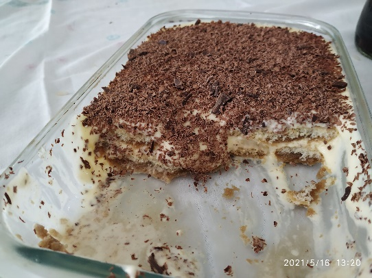

Tiramisù
Ingredientes
- 2 pacotes de bolacha champagne
- 4 ovos
- 500 g de mascarpone ou creme de mesa (nata batida ou cream cheese)
- 4 colheres de conhaque
- 4 colheres de licor de café ou de cacau
- ½ barra de chocolate meio amargo
- café forte
- gotas de baunilha
Modo de Preparo
Bater as claras em neve e reservar. Bater uma gemada com 3 colheres de açúcar para cada gema. Adicionar devagar as claras em neve e parar de bater na batedeira. Fazer um café bem forte e deixar esfriar um pouco e em seguida colocar 4 colheres de conhaque e 4 colheres de licor de café (se não tiver pode ser licor de cacau). Colocar também algumas gotas de baunilha. Num pirex colocar as bolachas e iniciar a montagem molhando cada bolacha com a calda de café com o auxílio de um pincel de confeiteiro. Em seguida despejar por cima o creme e ir alternando camadas de bolacha e creme terminando com a de creme. Levar a geladeira por no mínimo 4 horas (recomendado fazer de véspera). Na hora de servir polvilhar com chocolate amargo ralado.
